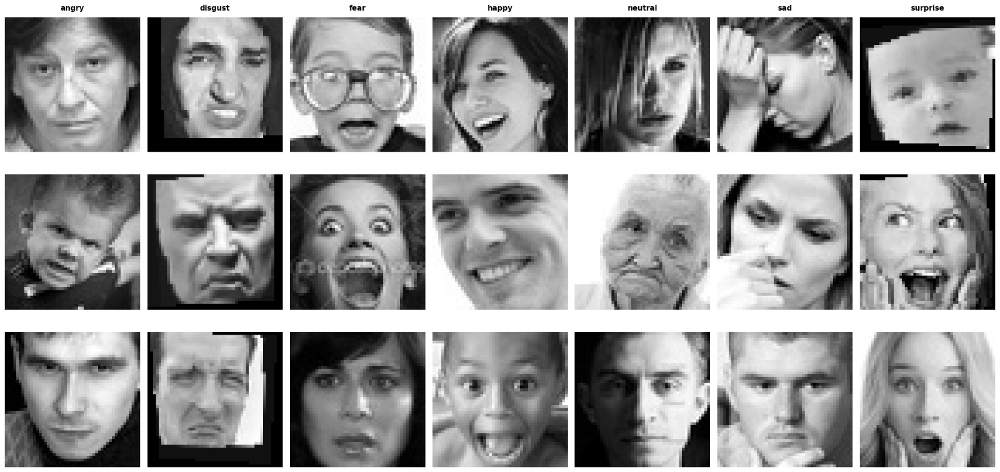
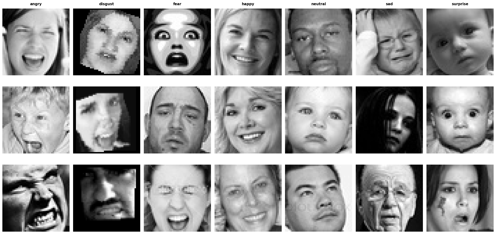
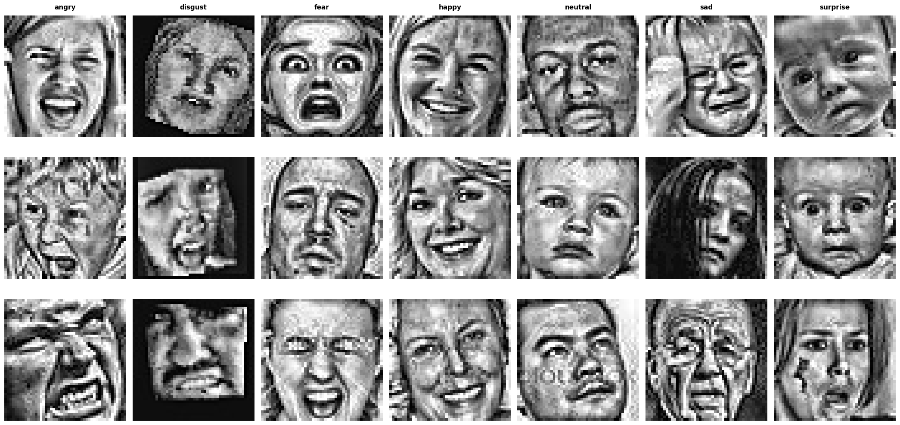
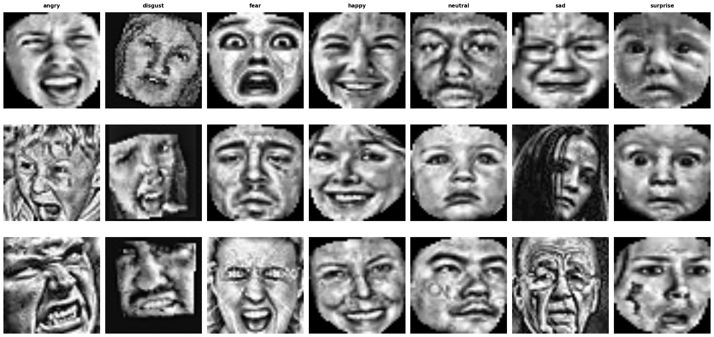
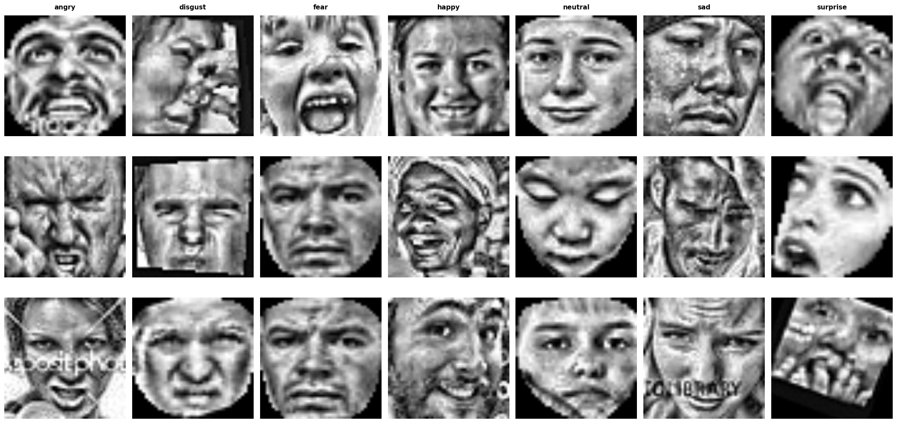
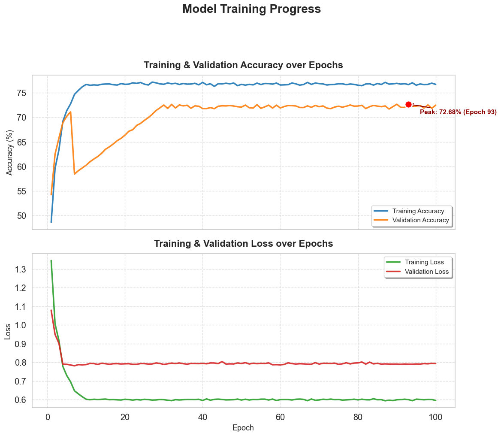
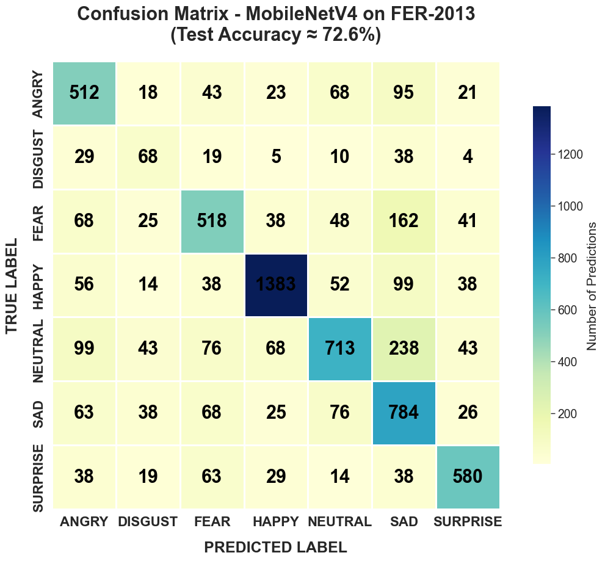
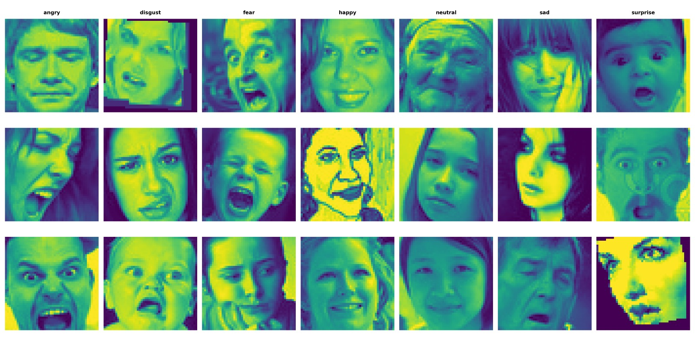
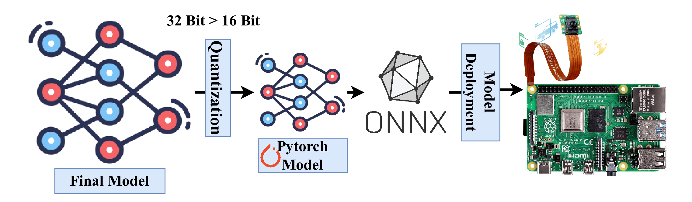

1. Abstract & Overview
Facial Emotion Recognition (FER) on edge devices requires a balance between accuracy and computational efficiency. Traditional deep learning models rely on high-performance GPUs, making them unsuitable for real-time, low-power IoT environments. This study proposes an efficient FER framework using the FER-2013 dataset, designed specifically for edge deployment.
The approach includes a preprocessing pipeline with CLAHE, unsharp masking, facial alignment, and masking to enhance feature quality. A dual-teacher knowledge distillation strategy is applied, transferring knowledge from ResNet50 and VGG19 models to a lightweight MobileNetV4-based student model.
The proposed model achieves 72.0% accuracy, outperforming both teacher models and ensemble methods, while using only 3.8M parameters and 4–8 ms inference time per image. This enables real-time, privacy-preserving emotion recognition on edge devices.
2. Key Innovations
Phish Activation
Uses the activation function \(x \cdot \tanh(\text{GELU}(x))\) to provide smoother gradient flow and better non-linearity than common activations such as ReLU.
DCWP Module
Depthwise Convolution with Phish activation reduces FLOPs while preserving meaningful spatial and channel-level features.
CBAM Attention
The Convolutional Block Attention Module helps the network focus on the most important facial regions such as the eyes, eyebrows, nose, and mouth.
Edge Efficiency
The model is designed for small hardware environments where fast inference, lower latency, and reduced resource usage are essential.
3. Data Preparation & Augmentation
3.1 Original Facial Emotion Samples
The original FER images contain faces with different poses, expressions, brightness levels, and background conditions. These raw images show the natural variability found in real-world emotion recognition datasets.

Figure 1: Original facial emotion samples from the dataset before preprocessing.
3.2 Preprocessing Stage 1 - Contrast Enhancement
In the first stage, image quality is improved using methods such as CLAHE and unsharp masking. This helps make important facial details more visible by improving local contrast and edge clarity.

Figure 2: Enhanced images after applying contrast improvement and sharpening operations.
3.3 Preprocessing Stage 2 - Facial Alignment
In the second stage, the face is aligned so that major landmarks appear in a more consistent position. This reduces unnecessary variation caused by head tilt or image orientation.

Figure 3: Facial alignment step used to normalize the facial region.
3.4 Preprocessing Stage 3 - Final Normalized Output
After enhancement and alignment, the final processed images become cleaner and more consistent. This allows the model to learn emotion-related features more effectively.

Figure 4: Final preprocessed samples used for training after normalization and refinement.
3.5 Facial Masking
Masking is applied to focus the model more strongly on the face region and reduce background influence. This helps improve feature quality by removing less useful surrounding information.

Figure 5: Masked facial samples highlighting the region of interest used for training.
4. Methodology
The overall workflow begins with raw facial images. These images are first preprocessed through enhancement, facial alignment, and masking. Then, knowledge distillation is performed using ResNet50 and VGG-16 as teacher models. Their soft-label knowledge is transferred to the lightweight student model, MobileNetV4 / LightCBAMNet.
During training, the student model learns from both soft labels generated by the teachers and hard labels from the actual dataset. This helps the compact model achieve better generalization while remaining computationally efficient.

Figure 6: Research methodology showing preprocessing, distilled knowledge transfer, student learning, and prediction workflow.
5. Architecture Breakdown
The proposed model follows an efficient and modular structure for compact emotion recognition.
- Input Stage: Receives preprocessed facial images.
- Feature Extraction: Lightweight convolution blocks capture local facial patterns.
- Attention Mechanism: CBAM emphasizes important regions for emotion recognition.
- Compact Representation: Efficient layers reduce model size without losing too much accuracy.
- Classifier Head: Produces the final probability across seven emotion classes.
This design supports fast inference and reduced memory usage, which is important for deployment on constrained devices.
6. Training Progress
The training graph shows that the model learns quickly in the early epochs and then gradually stabilizes. Training accuracy continues to remain high, while validation accuracy reaches a peak of approximately 72.68%. The loss curves also indicate that the model converges without severe instability.

Figure 7: Training and validation accuracy/loss curves across epochs.
7. Results & Visual Analysis
7.1 Confusion Matrix
The confusion matrix presents class-wise prediction behavior of the model on the FER-2013 test set. Strong diagonal values indicate correct predictions, while off-diagonal values reveal the classes that are frequently confused.
The model performs particularly well on happy, sad, and surprise, while some confusion appears between visually similar emotions such as fear, sad, and neutral.

Figure 8: Confusion matrix of the trained model on the FER-2013 test set.
7.2 Activation / Feature Visualization
Feature visualization helps us understand which areas of the image influence model prediction. These maps show that the network focuses on important facial regions rather than irrelevant background areas.

Figure 9: Feature or activation map visualization showing model attention across facial regions.
8. Comparative Analysis
8.1 Model Performance Comparison
The proposed lightweight model achieves better overall classification performance compared to several commonly used deep learning baselines. It improves accuracy while still keeping the model compact.
| Model | Accuracy (%) | Precision (%) | Recall (%) | F1-Score (%) |
|---|---|---|---|---|
| ResNet50 | 68.7 | 68.5 | 68.7 | 68.6 |
| VGG19 | 69.0 | 68.8 | 69.0 | 68.9 |
| EfficientNetB0 | 67.2 | 67.0 | 67.2 | 67.1 |
| MobileNetV2 | 66.4 | 66.2 | 66.4 | 66.3 |
| MobileNetV4 (Baseline) | 68.4 | 68.2 | 68.4 | 68.3 |
| Ensemble (ResNet50 + VGG19) | 70.7 | 70.5 | 70.7 | 70.6 |
| Proposed (MobileNetV4 / LightCBAMNet) | 72.0 | 71.8 | 72.0 | 71.9 |
8.2 Efficiency Comparison
In addition to performance, model efficiency is also very important for edge deployment. The proposed model maintains low FLOPs, small size, and short inference time compared to large teacher models.
| Model | Parameters (M) | GFLOPs | Model Size (MB, FP32) | Inference Time (ms/image) |
|---|---|---|---|---|
| ResNet50 | 25.6 | 4.1 | 102 | 15-25 |
| VGG19 | 143.7 | 19.6 | 574 | 30-50 |
| EfficientNetB0 | 5.3 | 0.39 | 21 | 10-20 |
| MobileNetV2 | 3.5 | 0.3 | 14 | 5-10 |
| MobileNetV4 (conv_small.e2400) | 3.8 | 0.2 | 10 | 4-8 |
| Ensemble (ResNet50 + VGG19) | 169 | 23.7 | 676 | 45-75 |
| Proposed (MobileNetV4 / LightCBAMNet) | 3.8 | 0.2 | 10 | 4-8 |
9. Deployment & Quantization
After training, the final model is optimized for deployment by applying quantization. This reduces numerical precision from 32-bit to 16-bit, lowering memory usage and improving deployment efficiency.
The optimized model is then exported for practical deployment, making it suitable for edge-compatible platforms and embedded systems.

Figure 10: Deployment pipeline showing quantization and model conversion for efficient execution.
10. Setup & Implementation
Prerequisites
Python 3.8+, PyTorch 1.7+, Torchvision, Scikit-learn, Matplotlib, NumPy, and Tqdm.
Installation
pip install torch torchvision scikit-learn matplotlib numpy tqdmTraining Command
Use the following command to train the student model on your dataset:
python train.py --data_dir images --epochs 100 --batch_size 32 --lr 0.001Implementation Summary
- Dataset preprocessing includes enhancement, alignment, and masking.
- Teacher models provide distilled soft-label information.
- The student model is trained using both hard and soft targets.
- Final evaluation is carried out using accuracy, precision, recall, F1-score, and confusion matrix.
- The final model is optimized for practical edge deployment.